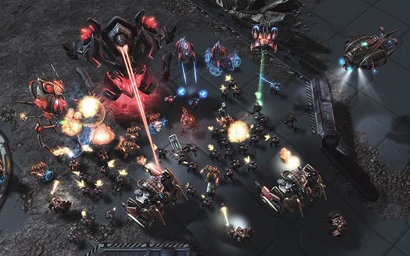

-

-
OVERVIEW
The galaxy is yours to conquer
Experience the game that redefined the real-time strategy genre. Terran, Zerg, or Protoss – do you have what it takes to become the galaxy's greatest commander?
Show your strategy on the battlefield
STARCRAFTII
GAME FEATURES
With large parts of StarCraft II’s single-player and multiplayer modes accessible for
free, it’s never been a better time to begin your StarCraft II story!
StarCraft 2 is a real-time strategy (RTS) game developed by Blizzard Entertainment, and it is the second installment in the
StarCraft series. Released in 2010, the game has gained massive popularity for its intricate storyline and strategic
gameplay, which revolves around the three races: Terran, Zerg, and Protoss. It offers various modes,
including a campaign, multiplayer, and cooperative modes.
-
3 POWERFUL RACES
Command the mechanized Terrans, psi-powered Protoss, and insectoid Zerg.
-
THE FIRST CAMPAIN FREE
Lead the Terrans across the galaxy in a quest for glory, redemption, and revenge. Want to continue the story? Full-length Zerg, and Protoss campaigns are available for purchase.
-
LEGENDARY MULTIPLAYER
Grow your skills and climb the multiplayer ladder in the world’s premier real-time-strategy esport.
-
FREE ARCADE MODES
StarCraft Arcade mode is a platform where players can enjoy a variety of user-created maps and game modes.
INTRODUCE
THREE TYPES OF RACES
Here’s an introduction to the three races in StarCraft 2: Terran, Zerg, and Protoss.
Each race has distinct characteristics, units, and strategies, making gameplay diverse and strategic.
Each race can be chosen based on the style of play, and it is important to use tactics that fit the unit composition and strategy
-
-
protoss
-
terran
-
zerg
PROTOSS
Protoss units are individually strong and supported by a shield system, making them resilient in battle. Although more expensive, each Protoss unit packs a significant punch
Protoss can use Warp Gates to summon units directly to the battlefield, allowing for swift reinforcements. Their shields regenerate over time, giving them additional durability during prolonged battles.
TERRAN
Terrans are known for their ability to adapt to any situation, relying on their flexible units and strong defense structures.
Terran buildings can be relocated, allowing for quick tactical adjustments. Their combination of infantry and mechanized units makes them versatile in both offensive and defensive strategies.
ZERG
Zerg are notorious for their ability to rapidly reproduce and overwhelm opponents with sheer numbers. Their strength lies in speed, expansion, and relentless aggression.
Zerg units are produced in large quantities at a low cost. Their ability to quickly swarm the map gives them an edge in controlling territory and pressuring enemies early in the game.
-
-
-
INFORMATION
GAME MODES
Whether you prefer a cinematic story campaign, best-in-class
multiplayer competition, specialized custom games in the Arcade,
or social and collaborative Co-op, StarCraft II has a mode for you.Each mode has its own goal and style of play, so you can choose according to your preference.
-
STORY
VERSUS
CO-OP
CUSTOM & ARCADE
WINGS OF LIBERTY
HEART OF THE SWARM
LEGACY OF THE VOID
RANKED MATCH
UNRANKED MATCH
COMMANDER SYSTEM
LEVELING SYSTEM
USER CUSTOM MAP
VARIETY OF GENERS
-
ESPORTS & GAME UPDATES
LATEST NEWS
Stay updated with the latest news and updates in StarCraft II.
From pro league highlights to community events,
we’ve got all the information you need.community events are buzzing with activity! There are plenty of tournaments
and fun custom games for fans to participate in, so make sure to join in
and let your creativity shine! -
-
Esports World Cup 2024 Club Championship:All you need to know
Esports World Cup 2024 officially kicks off today with theopening show starting in a few hours. The eight-week long esports festival features 21 esports titles and top teams
Jul 3,2024
-
Esports World Cup to host the Esports Awards 2024
Earlier today, the Esports Awards and the Esports World Cup Federation (EWCF) announced a three-year partnership, bringing one of the most prestigious awards in esports to the Esports World Cup. On August 24th, the Esports World Cup in Riyadh will host the Esports Awards 2024,honoring the year’s biggest achievers in esports.
Jun 8,2024
-
New RTS Game by StarCraft 2's David Kim To Revolutionize Genre
The real-time strategy (RTS) genre is poised for a significant transformation with the introduction of a new game spearheaded by David Kim, the former lead developer of StarCraft 2. This project promises to redefine the strategic gameplay dynamics that have characterized RTS games for decades. This upcoming game is expected to shift the paradigm of RTS games by making strategic depth and decision-making more central to gameplay, moving away from the rapid execution speed that defined previous titles like StarCraft.
Apr 25,2024
-
ESL SC2 Pro Tour Spring 24 Regionals - All you need to know
In the world of competitive StarCraft II, the ESL SC2 Pro Tour Spring Season closed qualifiers details have been announced. Set to commence from April 10th, this season marks the fourth installment of the tournament. Exciting offline finals at DreamHack Dallas Players and fans alike can anticipate thrilling matches as the ESL SC2 Pro Tour Masters Spring unfolds. Scheduled from May 31st to June 2nd, the offline Finals will take place at DreamHack Dallas. Notably, the top four semifinalists from
Apr 10,2024
-
MoistCr1TiKaL voices frustrations over US Visas for Esports teams
Charles “MoistCr1TiKaL” Christopher White Jr. is often seen as one of the voices of reason on the internet. Frequently seen commenting and critiquing various entities and personalities within the space, he is also a part-owner within the esports industry. Known as Moist Esports, the organization has teams competing in some of the most notable FPS and Fighting Games titles in esports; including VALORANT, Apex Legends, Brawlhalla, Super Smash Bros, and Melee to name a few. Recently the internet personality has
Mar 8,2024
show more
-
SELECT A PRODUCT
STARCRAFT II CAMOAIGN COLLECTION
The StarCraft II Campaign Collection is a comprehensive package that includes all story modes
from Blizzard's iconic RTS game, StarCraft II. Players can immerse themselves in the unique narratives of the
Terran, Zerg, and Protoss factions while enjoying strategic combat.
If you want to fully immerse yourself in the world of StarCraft II, this campaign collection is a must-have.
-

Nova Covert Ops Bundle
118.00
-
Campaign Collection
27.09
-
Campaign Collection Digital Deluxe
42.15
-
StarCraft® II
Play For Free
-
Enter the Koprulu Sector
-
Free
-
Vast Campaigns of War
Play through sweeping single-player campaigns with a combined total of over 70 missions from Wings of Liberty®, Heart of the Swarm®, Legacy of the Void® and Nova Covert Ops.
-
Co-Op Commanders
Group up online with other players in Co-Op Commander Mode and play as Raynor, Kerrigan, Artanis, Swann, Zagara, Vorazun or Karax.
-
Weekly Mutators
Play a challenging Co-op scenario every week as your Commanders gain experience and adapt to an ever-shifting battlefield.
Premium
-
Vast Campaigns of War
Play through sweeping single-player campaigns with a combined total of over 70 missions from Wings of Liberty®, Heart of the Swarm®, Legacy of the Void® and Nova Covert Ops.
-
Co-Op Commanders
Group up online with other players in Co-Op Commander Mode and play as Raynor, Kerrigan, Artanis, Swann, Zagara, Vorazun or Karax.
-
Weekly Mutators
Play a challenging Co-op scenario every week as your Commanders gain experience and adapt to an ever-shifting battlefield.
-
-
Digital Deluxe
If you purchase the Digital Deluxe, you'll also receive these goodies:
-
Premium
-
Vast Campaigns of War
Play through sweeping single-player campaigns with a combined total of over 70 missions from Wings of Liberty®, Heart of the Swarm®, Legacy of the Void® and Nova Covert Ops.
-
Co-Op Commanders
Group up online with other players in Co-Op Commander Mode and play as Raynor, Kerrigan, Artanis, Swann, Zagara, Vorazun or Karax.
-
Weekly Mutators
Play a challenging Co-op scenario every week as your Commanders gain experience and adapt to an ever-shifting battlefield.
-